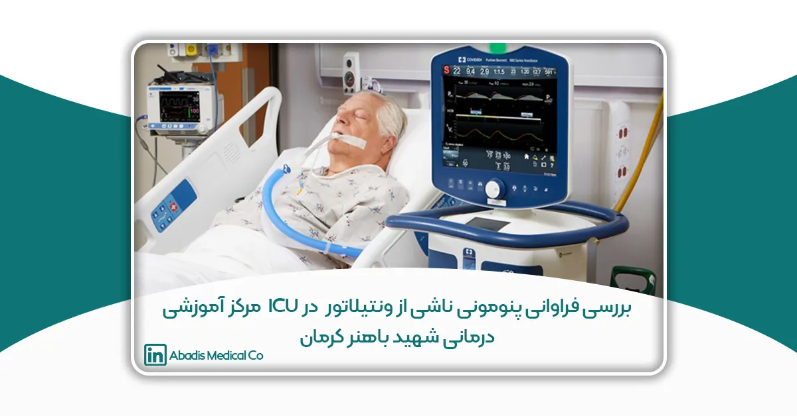
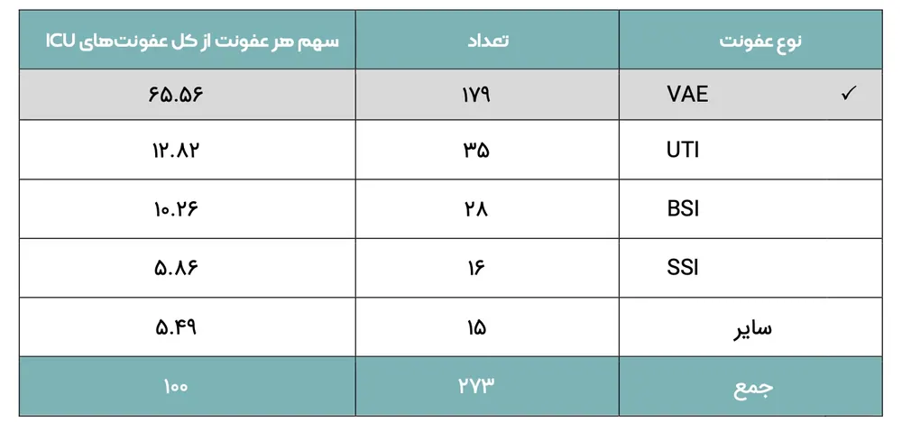
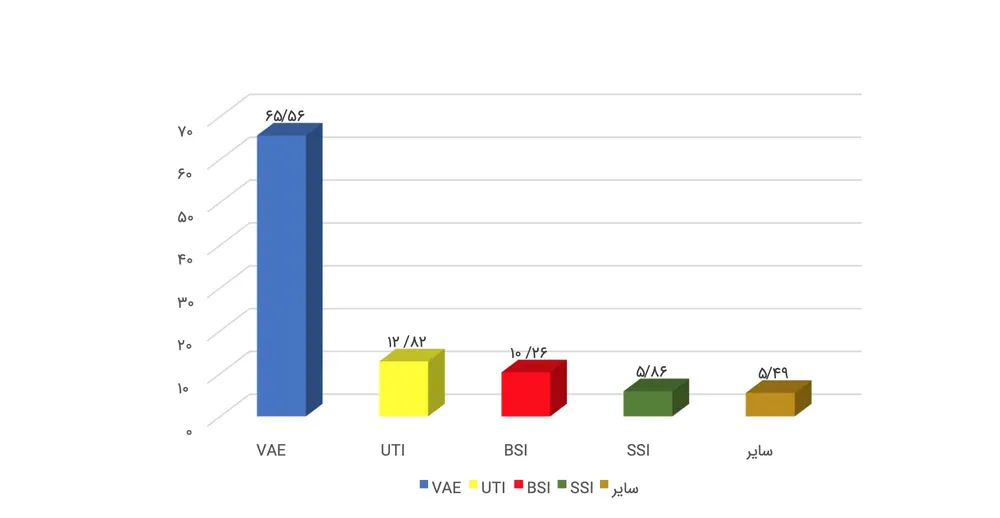
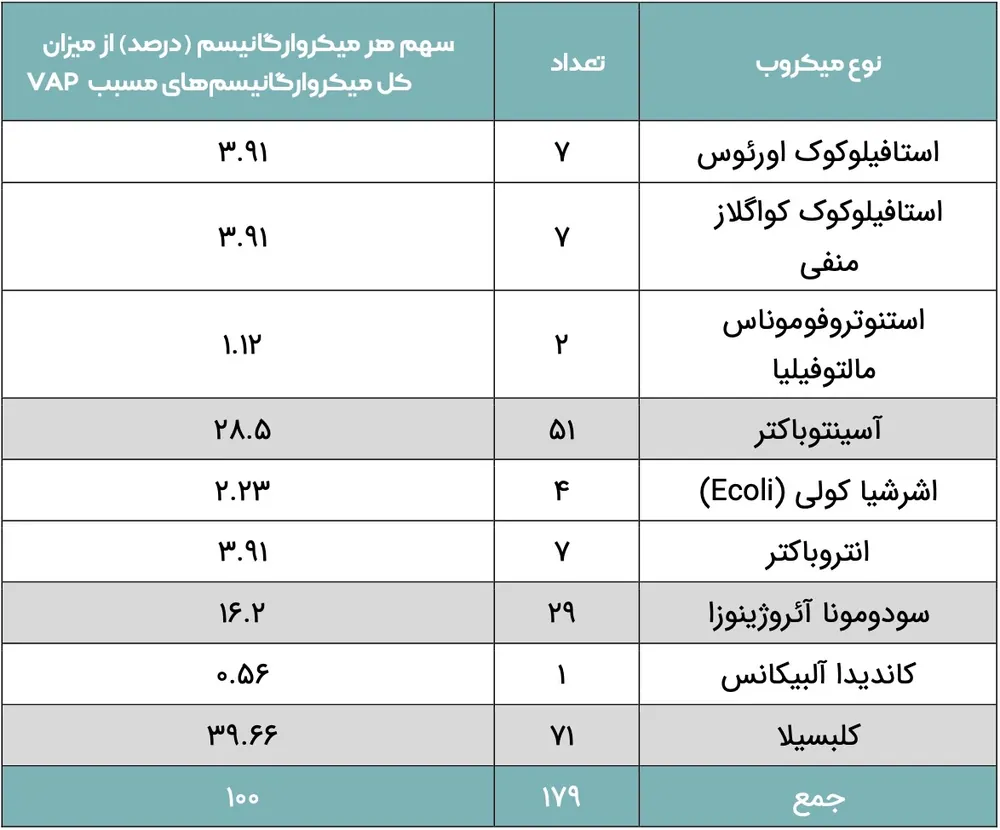

این مقاله توسط سرکارخانم الهام حاجی پور، جناب آقای نادر اسکندری، سرکارخانم نجمه شهسواری، سرکارخانم گیتی افشاری پور سرکارخانم اسماء حاج علیزاده و جمیله عسکری نوشته شده؛ و برای یازدهمین کنگره کنترل عفونت ارسال شده است.
چکیده
زمینه و هدف
عفونتهای بیمارستانی به عنوان یکی از عوامل مهم در افزایش موربیدیتی و مورتالیتی بیماران بستری در بیمارستان خصوصا بخش مراقبتهای ویژه به حساب میآیند. پنومونی وابسته به ونتیلاتور (VAP) در بین عفونتهای بیمارستانی در بخش مراقبت ویژه از اهمیت بالایی برخوردار است اولین گام در کنترل و درمان این عفونتها، شناسایی باکتریهای ایجادکننده این عفونتها میباشد. این امر میتواند به برنامهریزی جهت پیشگیری و کاهش عفونتها کمک کند.
مواد و روش ها
این مطالعه توصیفی تحلیلی در بازه زمانی 6 ماهه ابتدای سال 1402 در بخشهای ویژه مرکز آموزشی درمانی شهید باهنر کرمان انجام شد. از بیماران بستری تحت ونتیلاتور با علائم پنومونی کشت مینی بال ارسال شد و نتایج با استفاده از سیستم HIS و سامانه INIS و نرم افزار SPSS مورد بررسی قرار گرفت.
یافتهها
از ۳۷۱ کشت مینی بال ارسالی، ۲۷۳ کشت مثبت گزارش شد که در بین سایر عفونتهای شناسایی شده در این بازه زمانی میزان VAP بیشترین بود (۶۵.۵۶ درصد کل عفونتها). تستهای آزمایشگاهی به منظور شناسایی میکروارگانیسمها مشخص کرد که به ترتیب کلبسیلا ۳۹.۶۶ درصد، آسینتوباکتر ۲۸.۵ درصد ،و سودومونا ۱۶.۲ درصد عامل ایجاد VAP بوده اند.
بحث و نتیجهگیری
یافتهها نشان میدهد که عامل ۸۴.۳۶ درصد پنومونی ناشی از ونتیلاتور در بخشهای ویژه این مرکز درمانی، سه میکروارگانیسم کلبسیلا، آسینتوباکتر و سودومونا میباشند .شناسایی میکروارگانیسمها اولین قدم جهت برنامهریزی برای درمان، اقدامات پیشگیرانه و کنترل عفونت می باشد، که می تواند راهگشای پزشکان و مسئولین مربوطه باشد.
مقدمه
عفونتهای مرتبط با خدمات مراقبت تحت عنوان عفونتهای بیمارستانی در تمام کشورهای دنیا از اهمیت ویژه ای برخوردار است. طبق آمار سازمان بهداشت جهانی در هر لحظه در جهان 1400000 نفر از عوارض مربوط به عفونتهای بیمارستانی رنج می برند. در کشورهای در حال توسعه میزان عفونتهای قابل پیشگیری مرتبط با مراقبت های بهداشتی درمانی حدود 40 درصد و بیشتر برآورد شدهاست. (سازمان بهداشت جهانی 2012)
عفونت بیمارستانی یکی از مهمترین مشکلات بخش های مراقبت ویژه است، به طوری که 20 درصد بیماران بستری در این بخش ها را مبتلا میکند و میزان مرگ و میر را به بیش از 30 درصد افزایش میدهد (نظری و همکاران ،2011) در ایالات متحده، شیوع این عفونتها در بخش های مراقبت ویژه 3 برابر بیش تر از سایر بخشها است و 90 درصد این عفونتها توسط باکتری ها ایجاد می شوند (یازندی چراتی و همکاران ،2015). در این زمینه در کشور ما آمار دقیقی در دسترس نیست، البته شیوع عفونتها در اکثر کشورها یک مشکل اساسی است و تنها ویژه کشور ما نیست(باقری و همکاران ،2014).
در بین عفونتهای بیمارستانی، عفونتهای تنفسی وابسته به ونتیلاتور به علت افزایش طول مدت تهویه مکانیکی و طول مدت بستری در بیمارستان و همچنین افزایش احتمال ایجاد مقاومتهای میکروبی و بالا بردن هزینه درمان حائز اهمیت هستند. این عارضه یکی از مهم ترین علل مرگ و میر ناشی از عفونت در بخشهای ویژه میباشد. پنومونی وابسته به ونتیلاتور به عنوان یک چالش برای کارکنان مراقبتهای ویژه شناخته شده است (برگمن ،1997).
به همین جهت، پیشگیری از عفونتهای تنفسی وابسته به ونتیلاتور جزو اولویتهای اصلی بخشهای مراقبت ویژه در سراسر دنیاست.
یکی از دغدغههای مرکز آموزشی درمانی شهید باهنر کرمان که سانتر ترومای جنوب شرق کشور میباشد با دارا بودن 4 بخش مراقبت ویژه که جمعا دارای 56 تخت ICU می باشد ،عفونتهای وابسته به ونتیلاتور است.
تحقیق حاضر به منظور بررسی میزان فراوانی عفونتهای تنفسی وابسته به ونتیلاتور و نوع میکروارگانیسمهای ایجاد کننده با هدف برنامهریزی برای کاهش این عفونتها صورت گرفته است.
مواد و روشها
این پژوهش، یک مطالعه توصیفی تحلیلی است. جامعه مورد مطالعه کلیه بیماران بستری در بخش های ویژه مرکز آموزشی درمانی شهید باهنر کرمان است. نمونه آماری بیماران بستری در بخش های مراقبت ویژه که تحت ونتیلاتور بوده اند. معیار ورود نمونه ها به مطالعه انجام کشت مینی بال به دنبال بروز علائم عفونت مانند تب و افزایش ترشحات تنفسی بود. بازه زمانی تحقیق 6 ماه ابتدای سال 1402 می باشد.
در بازه زمانی مورد مطالعه 847 بیمار در بخشهای ICU بستری بوده اند. از 8809 بیمار-روز ، 5346 ونتیلاتور-روز ثبت شده است .تعداد مینی بال ارسالی از بخش های مراقبت ویژه به آزمایشگاه 371 نمونه بود که بعد از انجام مراحل آزمایشگاهی نتایج در سامانه HIS بیمارستان ثبت و استخراج گردید. این نتایج (کشتهای مثبت) به همراه مخرجهای آماری (که توسط سرپرستاران در فرم مخصوص ثبت و به واحد کنترل عفونت ارسال می گردد) در سامانه INIS کشوری وارد شد و آمار مورد نیاز تحقیق از این سامانه استخراج گردید و با استفاده از نرم افزار SPSS مورد بررسی قرار گرفت.
نتایج
از تعداد 371 کشت مینی بال ارسالی به آزمایشگاه، تعداد 273 کشت مینی بال مثبت گزارش شد. در جدول ذیل میزان فراوانی و سهم عفونتهای وابسته به ونتیلاتور از چهار عفونت اصلی مشخص گردیده است.

جدول 1: میزان فراوانی عفونتهای بیمارستان و سهم هر عفونت از کل عفونتهای ICU
طبق آمار میزان پنومونی وابسته به ونتیلاتور 65.56 درصد، عفونتهای ادراری 12.82درصد، عفونت خون 10.26 درصد، عفونت زخم۵.۸۶ درصد و سایر عفونتها (مانند CNS MEN ) ۵.۴۹ درصد از کل عفونتهای بخشهای مراقبت ویژه را شامل می شود.

نمودار1: سهم چهار عفونت اصلی (درصد) از کل عفونتهای ICU
بررسی نوع میکروارگانیسمهای ایجاد کننده عفونتهای تنفسی وابسته به ونتیلاتور که از تستهای آزمایشگاهی استخراج گردیده است در جدول 2 نمایش داده شده است:

جدول 2: فراوانی میکروارگانیسمهای مسبب VAP و سهم هر میکروارگانیسم (درصد) از میزان کل میکروارگانیسمهای شناسایی شده
آمار نشان می دهد که استافیلوکوک اورئوس ۳.۹۱ درصد ،استافیلوکوک کواگلاز منفی ۳.۹۱ درصد ،استنوتروفوموناس مالتوفیلیا ۱.۱۲ درصد، آسینتوباکتر ۲۸.۵ درصد، اشرشیا کولی ۲.۲۳ درصد ،انتروباکتر ۳.۹۱ درصد ،سودومونا آئروژینوزا ۱۶.۲ درصد، کاندیدا آلبیکانس ۰.۵۶ درصد و کلبسیلا ۳۹.۶۶ درصد در ایجاد عفونتهای تنفسی وابسته به ونتیلاتور در این مرکز نقش دارند.
بحث و نتیجه گیری
یافتههای این پژوهش نشان می دهد که میزان پنومونی وابسته به ونتیلاتور با اختلاف زیادی در رتبه اول عفونتهای بخشهای ویژه این مرکز قرار دارد. همچنین بر اساس نتاج مشخص شد که باکتری کلبسیلا مسئول ایجاد ۳۹.۶۶ درصد عفونتهای تنفسی وابسته به ونتیلاتور در بخشهای ویژه این مرکز است .در مرتبه دوم و سوم به ترتیب آسینتوباکتر با ۲۸.۵ درصد و سودوموناس با ۱۶.۲ درصد قرار دارند. بنابراین میتوان گفت عامل ایجاد ۸۴.۳۶ درصد عفونتهای تنفسی وابسته به ونتیلاتور در بخشهای ویژه مرکز آموزشی درمانی شهید باهنر کرمان، سه میکروارگانیسم کلبسیلا، آسینتوباکتر و سودومونا میباشد .مقایسه نتایج این پژوهش با مطالعه محمدی مهر(1386) در بیمارستان بعثت تهران، همچنین اکبری (2011) در بیمارستان امام رضا ارومیه و شکیب و همکاران (1393) در بیمارستان بعثت سنندج همخوانی دارد.
پیشنهادات
میکروارگانیسمهای بیماریزا به ویژه آسینتوباکتر که میکروارگانیسم بیمارستانی است اغلب از طریق دست پرسنل بیمارستان بین بیماران پخش می شوند .همچنین سطوح آلوده می تواند به عنوان منبع مهم آلودگی مطرح باشد. پایش موثر میکروارگانیسمهای مسبب عفونت خصوصا عفونت های تنفسی وابسته به ونتیلاتور در بخش های ویژه جهت تشخیص سریع و شروع درمان موثر، به منظور جلوگیری از عوارض و کاهش مرگ و میر ضروری است. آموزش و نظارت بر اجرای دستورالعمل های مراقبت تنفسی مانند انجام ساکشن به روش استریل و مراقبت از کاف لوله تراشه باید به صورت مستمر و سختگیرانه در برنامه کار قرار گیرد. از آنجا که امروزه بحث مقاومتهای میکروبی در برابر آنتی بیوتیک ها مطرح است انجام پژوهش هایی در این زمینه پیشنهاد می گردد.
منابع
- شکیب، پگاه و همکاران (1393) . بررسی فراوانی عفونتهای بیمارستانی در بخش مراقبت های ویژه بیمارستان بعثت سنندج. مجله علوم پزشکی زانکو، ص 41-36.
- Akbari M, Rahim nejad R, azim Poor A, bernousy A, Ghahremanloo H. The prevalence of nosocomial infection in ICU, Imam Reza Hospital, Urmia city and provide appropriate solutions based on international standards for the prevention. J Uremia Univ Med Sci. 2011; 23: 591596.
- Bagheri, P. (2014). The Review Systematic and Meta Analysis of Prevalence and Cause of Nasocomial Infection in Iran. Iran J Med Microbial, 8(4); 1-12. [Persian]
- Bergmans DC, Bonten MJ, Gaillard CA, Van Tiel FH, Van Der Geest S, De Leeuw PW, et al. Indications for antibiotic use in ICU patients: a one-year prospective surveillance. J Antimicrob Chemother 1997; 39(4): 527-535.
- Cherati, J. Y., Shojai, J. Chaharkameh, A. Rezai, M. S., Khosravi. F., Rezai, F.,& Dalili, A. (2015). Incidence of Nosocomial Infection I, selected cities according NISS softeware in Mazandaran Proovince, 24 (122) : 64-71 .
- Http://www.cdc.gov/nhsn/PDFs/pscManual/17pscNosInfDef_current.pdf
- Mohammadi Mehr M, Faizabadi M, Bahadur IO, Tashakor Arani M, Khosravi M. Prevalence and antibiotic resistance of Gram-negative bacteria responsible for nosocomial infection in intensive care unit of hospital in Tehran in 1386. Iran J Med Sci. 2009; 3: 47-54.
- Nazari, R. & Asgari, P. (2011). Study of hand hygiene behavior among nurses in Critical Care Units. Iran J Crit Care Nurse Summ. 4(2), 8-.59